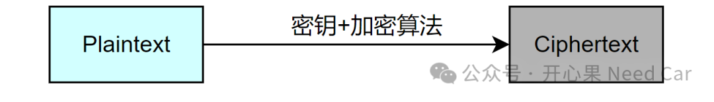
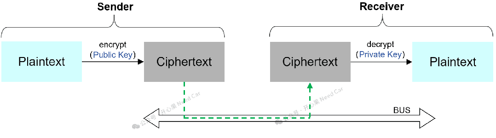
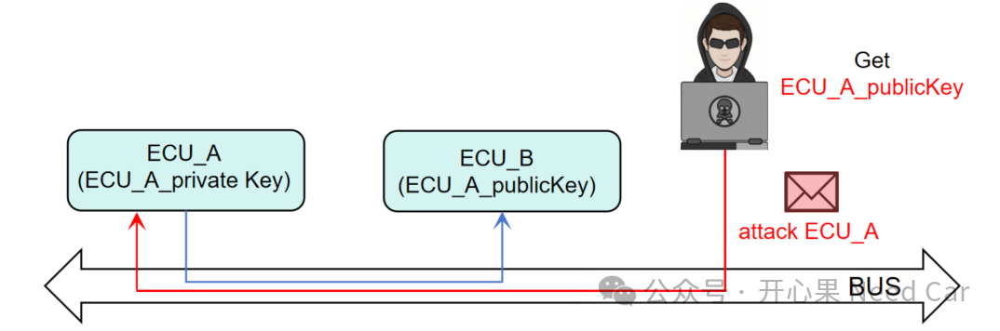
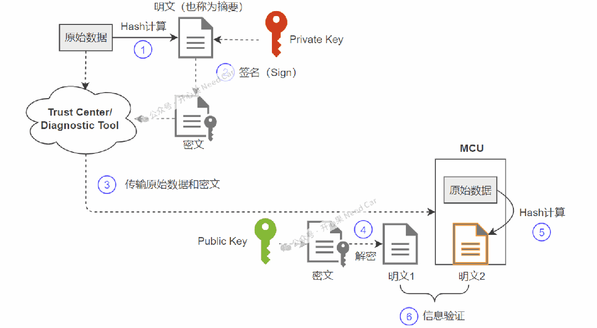
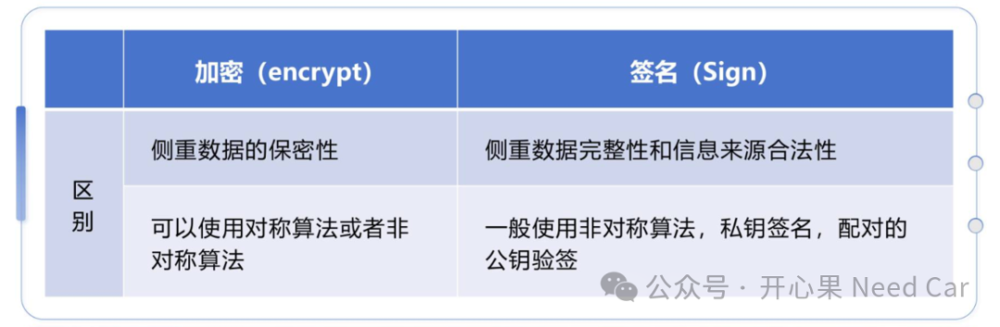

签名与加密应使用各自定义的方案。不要把“私钥加密、公钥解密”当作所有数字签名的通用算法说明；RSA-PSS和RSA-OAEP分别属于签名与加密方案。
RFC 8017，第7、8节开心果 Need Car · 2024-07-26T06:34:00+08:00 · 微信原文
车辆信息安全，已然成为各个控制器的标配。所以，工程师有必要了解一下信息安全，尤其一些基本的信息安全概念。本文就着重聊一下信息安全中的加密（encrypt）和签名（sign）。
提示：本文主要基于非对称算法讨论加密和签名
1、加密和签名概念
加密：基于某种规则（加密算法+密钥），对明文（plaintext）进行隐藏处理，得到密文（ciphertext）的过程，示意如下：

加密的主要目的：不想让第三方知道发送的数据内容，确保数据的机密性。既然数据需要加密，就需要使用密钥，在非对称加密中，发送端使用公钥（public key）对明文加密，接收端使用配对的私钥（private key）对密文进行解密，示意如下：

在汽车MCU级芯片中，系统对时时性要求较高，一般不常用非对称算法进行数据的加密和解密处理，如果需要使用非对称算法，也只会对少量数据处理。所以，工程上，一般会选择加密/解密速度更快的对称算法，eg：AES（Advanced Encryption Standard）。
如果加密选择非对称算法，就需要将公钥发送给目标方，即：公钥需要公开。如果公钥被公开，就会面临一个场景：控制器A留有私钥（ECU_A_privateKey），配对的公钥（ECU_A_publicKey）只想发送给ECU_B，但是ECU_A_publicKey可能被多方获取，进而伪造信息发送给控制器A，如果控制器A不能识别信息来源的合法性，直接接收并使用，就会存在安全隐患，示意如下：

所以，面对如上的场景，也就延伸出了签名（Sign）和验签（verify）的概念，或者说身份认证（Authentication）。
加密（encrypt）和解密（decrypt）成对出现，使用非对称算法时，一般常见的用法：加密方使用公钥加密，接收方使用私钥解密，密钥成对出现。当然，使用私钥加密，配对的公钥解密也是可以的。
（二）签名
签名（Sign）：使用私钥对信息处理的过程。
既然加密的数据无法通过解密（decrypt）验证信息来源的有效性，那么就得引入一种机制，验证信息来源的合法性，或者说唯一性，即：通过获取的公钥验证（verify）信息，进而确认信息发送方的合法性，这个过程称为身份认证（Authentication）。只有经过了身份认证，才会进行后续的数据接收处理，认证过程示意如下：

工程上，常常先通过哈希算法（eg：SHA256）对目标数据进行计算，得到一个固定长度的哈希值（eg：32 byte），这个哈希值也可称为摘要信息。之后，使用私钥对摘要信息进行加密处理，得到密文，这个过程就称为签名（Sign）。上位机或者云端将原始数据和密文发送给目标控制器，目标控制器使用配对公钥对密文解密得到摘要信息（明文1），同时，控制器对接收到的原始数据进行同样的哈希计算，得到明文2，如果 明文1 == 明文2，则验签通过，反之，失败。
签名（Sign）和验签（Verify）成对出现，使用非对称算法时，一般常见的用法：签名方使用私钥签名，接收方使用对应的公钥验签。
签名可以由信任中心（Trust Centre）完成，使用私钥生成密文，同时，信任中心将对应的公钥发送给目标控制器，目标控制器通过公钥对密文进行验签，完成信息合法性和完整性认证。

往期精彩回顾